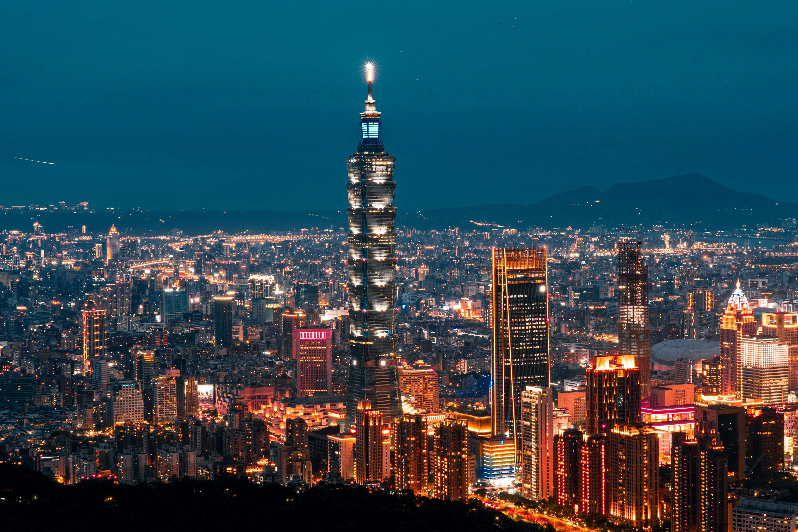

Taipei Travel Guide
Taipei, the capital city of Taiwan, is known for its blend of modernity and tradition. From towering skyscrapers to historic temples, Taipei offers a diverse range of experiences for every traveler. Here's a comprehensive guide to help you explore this vibrant city.
Top Attractions
Make sure to visit these must-see attractions while in Taipei:
- Taipei 101: Once the world's tallest building, Taipei 101 offers stunning views of the city from its observatory deck.
- National Palace Museum: Home to one of the largest collections of Chinese art and artifacts.
- Chiang Kai-shek Memorial Hall: A national monument that honors the former President of the Republic of China.
Dining
Taipei is renowned for its food scene, particularly its night markets. Don't miss these culinary experiences:
- Shilin Night Market: Sample a variety of street foods, from stinky tofu to bubble tea.
- Din Tai Fung: Enjoy world-famous soup dumplings (xiao long bao) at this renowned restaurant.
- Beef Noodle Soup: Try this Taiwanese comfort food at Lin Dong Fang or Yong Kang Beef Noodle.
Shopping
Taipei offers a mix of modern malls and traditional markets. Here are some top shopping spots:
- Ximending: Known as the "Harajuku of Taipei," this area is popular for fashion, entertainment, and youth culture.
- Raohe Street Night Market: One of the oldest night markets in Taipei, offering a range of street food and local products.
- Taipei City Mall: An underground mall with a variety of shops and eateries.
Cultural Experiences
Immerse yourself in Taipei's rich cultural heritage with these experiences:
- Longshan Temple: A beautiful temple with intricate architecture and a serene atmosphere.
- Elephant Mountain: Hike up this mountain for a breathtaking view of Taipei's skyline, especially at sunset.
- Maokong Gondola: Take a scenic ride to the Maokong tea plantations and enjoy a traditional tea ceremony.